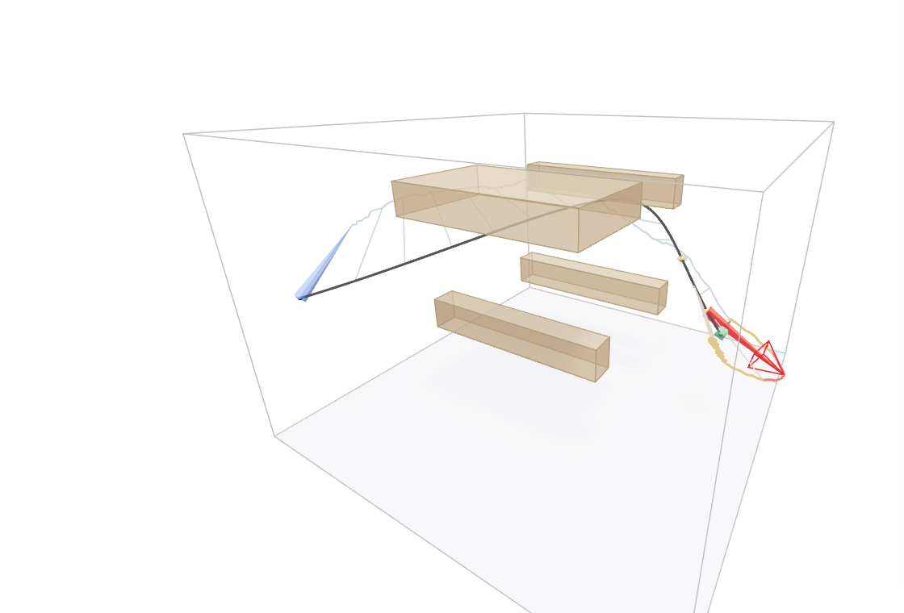
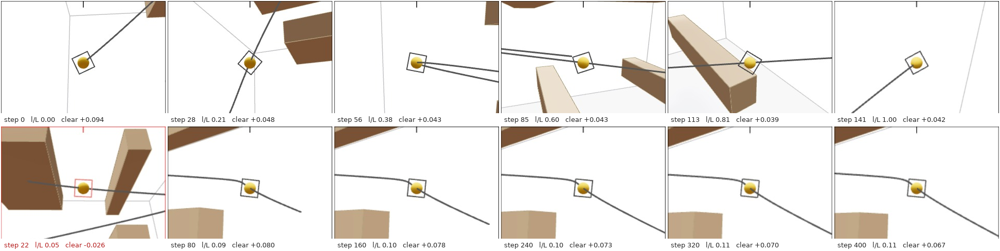
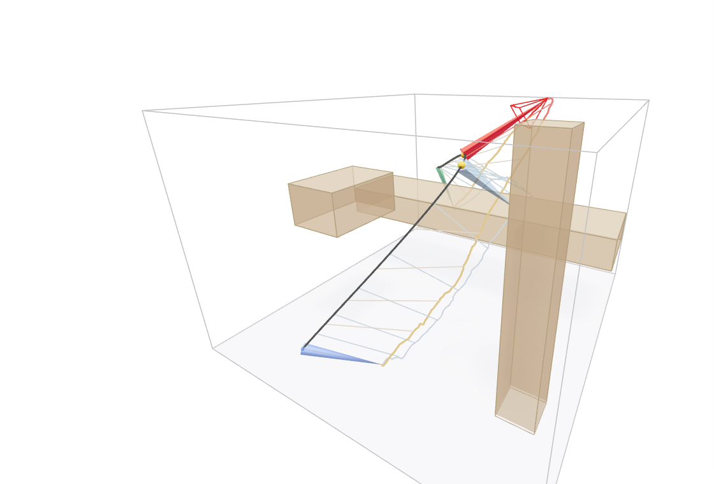
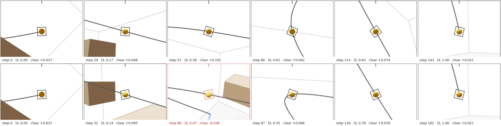
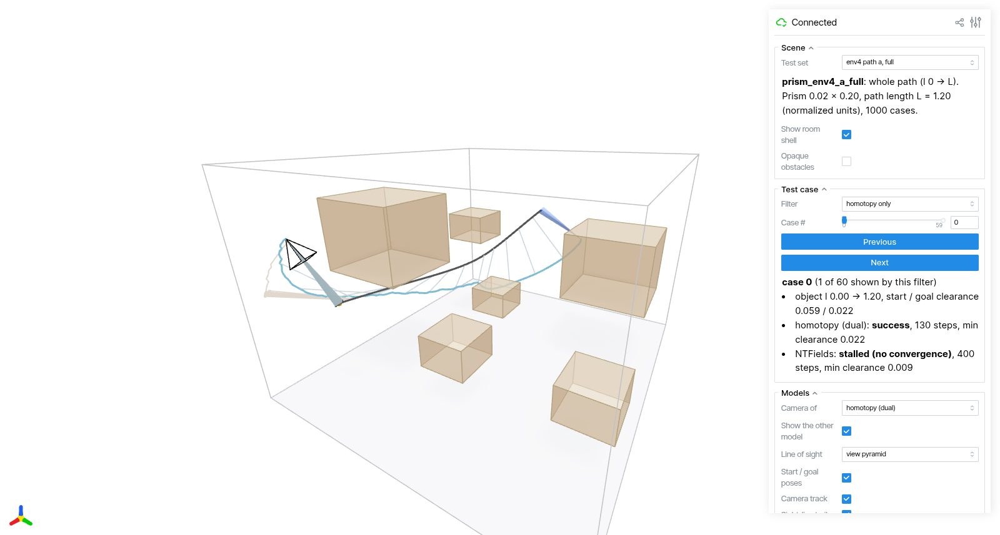

A camera follows an object moving along a known path and must keep it in view. We model the line of sight as a thin square prism glued to the object at one end, free to rotate, and plan its motion with two learned travel-time fields. The homotopy head solves almost every case. Metric NTFields fails on 8–14% of whole-path cases, mostly right at the start of the path.
The object is a point moving along a given path p(l), with l the arc length from 0 to L. The camera's line of sight is a square prism (side w = 0.02, length h = 0.2 in normalized room units). One end is glued to the object and the other end is the camera. The prism may turn freely about the glued end. Start and goal orientations are given. If the prism never touches the scene, nothing ever blocks the camera's view of the object, and the camera never hits anything.
The viewer below draws the line of sight as a view pyramid: apex at the camera, base the w × w square around the object. The pyramid sits inside the planned prism, so a clear prism means a clear pyramid.
full whole path; tight both ends 0.005–0.02 from the scene; bigrot turn ≥ 150°; hard tight and ≥ 135°; seg sub-paths of at least 0.25.Forward mode, mean of 3 seeds (the NTFields whisker is ± one standard deviation across seeds; the homotopy head's spread is at most 0.4 points). The axis starts at 70%. Turning straight to the goal would succeed in only 6–25% of the whole-path cases and 43–58% of the sub-path cases.
| Set (mean of 3 scenes) | Turn straight | Homotopy, dual | Homotopy, base | NTFields |
|---|---|---|---|---|
| full: whole path | 9.0 | 99.7 | 97.4 | 91.5 |
| tight: ends close to obstacles | 14.3 | 99.8 | 98.5 | 85.9 |
| bigrot: turn ≥ 150° | 11.0 | 99.7 | 97.4 | 91.7 |
| hard: tight and ≥ 135° | 14.7 | 99.8 | 98.8 | 86.3 |
| seg: sub-paths | 50.7 | 99.7 | 98.1 | 98.5 |
Paired case by case (same seed, exact McNemar test), the dual homotopy planner solves 225–514 whole-path cases out of 3000 that NTFields misses, against 0–21 the other way (p < 1e-58 on every whole-path set). On sub-paths the gap is small but still significant: +17/−2, +22/−4, +92/−19.
Two cases where the homotopy head succeeds and NTFields lets the line of sight hit the scene. The overview shows both plans at the moment NTFields is most blocked (blue: homotopy, orange/red: NTFields, black: object path, red pyramid: touching the scene). The strips show each model's camera view, looking at the object from the camera end of the prism with a 40° field of view and opaque obstacles; the square around the object is the base of the view pyramid.




| Whole path, forward mode | Homotopy dual: collision / stall | Homotopy base: collision / stall | NTFields: collision / stall |
|---|---|---|---|
| env1 full | 0.0 / 0.0 | 0.0 / 0.0 | 4.5 / 7.5 |
| env3 full | 0.0 / 0.0 | 0.0 / 0.0 | 3.5 / 7.7 |
| env4 full | 0.0 / 1.0 | 0.2 / 7.8 | 2.8 / 10.1 |
| env1 tight | 0.0 / 0.0 | 0.0 / 0.0 | 4.8 / 12.0 |
| env3 tight | 0.0 / 0.0 | 0.0 / 0.1 | 7.2 / 12.0 |
| env4 tight | 0.0 / 0.6 | 0.0 / 4.3 | 5.1 / 16.7 |
One seed each. With the camera farther from the object (prism length 0.3), turning straight works in only 1–5% of cases. The second path per scene (b) uses the prism of length 0.2.
env3 path b is the one tie (98.1 vs 98.1). There, all of the homotopy head's 1.9% failures are stalls, while NTFields has 0.7% collisions plus 1.9% stalls.
| Question | Homotopy head | NTFields |
|---|---|---|
| Forward-only vs unconstrained planning | same success within 0.8 points | same within 0.8 points |
| Unconstrained plans that move the object backward | 0.2–11% of whole-path plans, 6–19% of sub-path plans: plan forward-only | |
| Unrolled path vs real 3-D anchor position as input | within 0.4 (dual) / 2.3 (base) points | unrolled is better by 1.5–7.2 points |
| 4000 vs 8000 training epochs | within 0.4 points | within 1.2 points |
| Clearance of successful plans (median) | 0.028–0.029 | 0.039–0.041 |
| Rotation of successful plans (median turns) | 0.66–0.73 | 0.76–0.89 |
NTFields' successful plans keep more clearance, but they are the easier cases. The homotopy head also solves the cases where the endpoints themselves are 0.02 from the scene.
models/path_constrained/scripts/path_viser.py is a viser viewer for these plans, built like the other shape viewers. It runs on the lab machine at port 8102 (container pc_viser_path).

python models/path_constrained/scripts/path_viser.py --port 8102 (numpy + viser only). The plans come from export_viser_path.py (torch, about 2 min per test set). --look --opaque --dump DIR --strip 6 writes camera-view frames like the strips above.models/path_constrained/README.md, full log EXPERIMENTS.mdresults/path_constrained/summary/summary.mdtrain/train_homotopy_path.py, train/train_metric_path.py; tests: tests/test_path_constrained.py